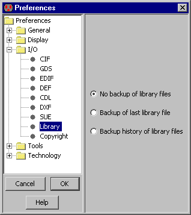
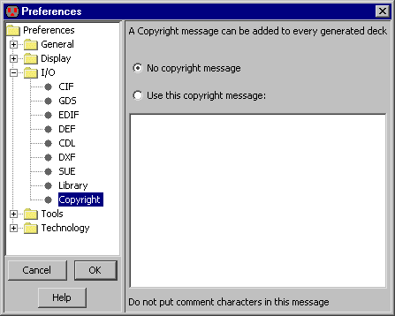

Запись библиотек на диск осуществляется с помощью команды Save Library (в меню File).
|
Save All Libraries команда для всех библиотек, которые изменились. Вы можете также использовать значок сохранять библиотеки.
Чтобы просмотреть все библиотеки, которые будут сохранены, используйте Mark All Libraries for Saving,
или Save All Libraries in Format определить, как они должны быть сохранены.
|  |
Если библиотека читалась с диска, она прописана к этому самому файлу. Если, Вы желаете прописать библиотеку к новому файлу (таким образом сохраняющий оригинал) тогда используйте Save Library As... команду.
|
Свойства "Library" (in menu File / Preferences..., "I/O" section, "Library" tab)
варианты предложений для того, чтобы сохранять библиотеки на диск.
По умолчанию, сохраненные библиотеки записывают поверх предыдущих файлов, и никакая резервная копия не создается.
Если Вы выбираете "Backup of last library file",
тогда прежняя библиотека переименована так, чтобы она имела "~" в конце.
If you choose "Backup history of library files",
тогда прежняя библиотека переименована так, чтобы в названии содержалось дата создания.
|  |
Electric может также записать внешние файлы с этой командой в File / Export меню:
- CIF (Caltech Intermediate Format) используется, чтобы описать рисунок схемы. Выходной файл содержит только текущий элемент и любую электрическую схему ниже в иерархии. (in menu File / Preferences..., "I/O" section, "CIF" tab)
см. Section 7-3-2 больше о CIF.
- GDS II (Stream) используется, чтобы описать рисунок схемы. Выходной файл содержит только текущий элемент и любую электрическую схему ниже в иерархии.
(in menu File / Preferences..., "I/O" section, "GDS" tab)
см. Section 7-3-3 больше о GDS.
- EDIF (Electronic Design Interchange Format) может записать или Netlist или Схематический вид схемы.Electric записывает в EDIF версия 2 0 0.
(in menu File / Preferences..., "I/O" section, "EDIF" tab)
см.Section 7-3-4 больше о EDIF.
- LEF (Library Exchange Format) является форматом обмена, который описывает экспорт элементов в библиотеке.
- L это GDT язык, до появления в некоторых коммерческих системах. Выходной файл содержит только текущий элемент и любую электрическую схему ниже этого в иерархии.
- Eagle является интерфейсом к Eagle схемным решениям , проектировочным системам (ее формат netlist). Перед записью Eagle файлов, Вы должны дать каждой точке атрибут "ref_des", и каждый контакт на этих точках атрибут "pin". Если Вы также размещаете атрибут "pkg_type" на точке , это отменяет название элемента.
- ECAD является интерфейсом к ECAD схемным решениям (ее формат netlist). Перед записью ECAD файлов, Вы должны дать каждой точке атрибут "ref_des", и каждый контакт на этих точках атрибут "pin". Если Вы также размещаете атрибут "pkg_type" на точке , это отменяет название элемента.
- Pads является интерфейсом к схемным решениям Контактных площадок (ее формат netlist). Перед записью файлов Контактных площадок, Вы должны дать каждой точке атрибут "ref_des", и каждый контакт на этих точках атрибут "pin". Если Вы также размещаете атрибут "pkg_type" на точке , это отменяет название элемента.
- Text Cell Contents используется, чтобы записать текстовый файл от текстового элемента. Текущим окном должно быть текстовое вид (типа VHDL, Verilog, документации, и т.д.)
см. Section 4-10
- PostScript является Adobe печатающий язык. Выходной файл содержит только визуальное изображение текущего элемента (или часть того элемента). Вариантами PostScript можно контролировать с помощью:
(in menu File / Preferences..., "General" section, "Printing" tab).
- HPGL Hewlett-Packard печатающий язык.
Выходной файл содержит только визуальное изображение текущего элемента
(или часть того элемента).
- PNG (Portable Network Graphics) формат изображения, который фиксирует текущее окно.
- DXF (AutoCAD) является форматом обмена моделирования.
(in menu File / Preferences..., "I/O" section, "DXF" tab)
см. Section 7-3-7
- ELIB (Version 6) пишет двоичные файлы старого формата. Эти файлы могут читаться Electric 6 версии.
|  |
Экспортируемые файлы от Electric, являются секретом фирмы. Информация авторского права может быть установлена в экспортируемые файлы с помощью
"Copyright" (in menu File / Preferences..., "General" section, "Copyright" tab).
Так как каждый экспортный файл имеет различный формат для комментариев, текст авторского права не должен содержать никаких таких символов. Вместо этого, система вставит присущие символы комментария для специфического экспортного формата.
|
Информация авторского права будет установлена в экспорт для CIF, LEF, и PostScript, так же как на имитации netlists для
Verilog, Spice, Silos, ESIM/RSIM/RNL/COSMOS, FastHenry, Maxwell, и IRSIM.